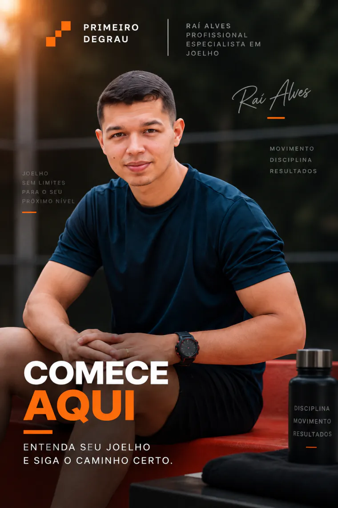
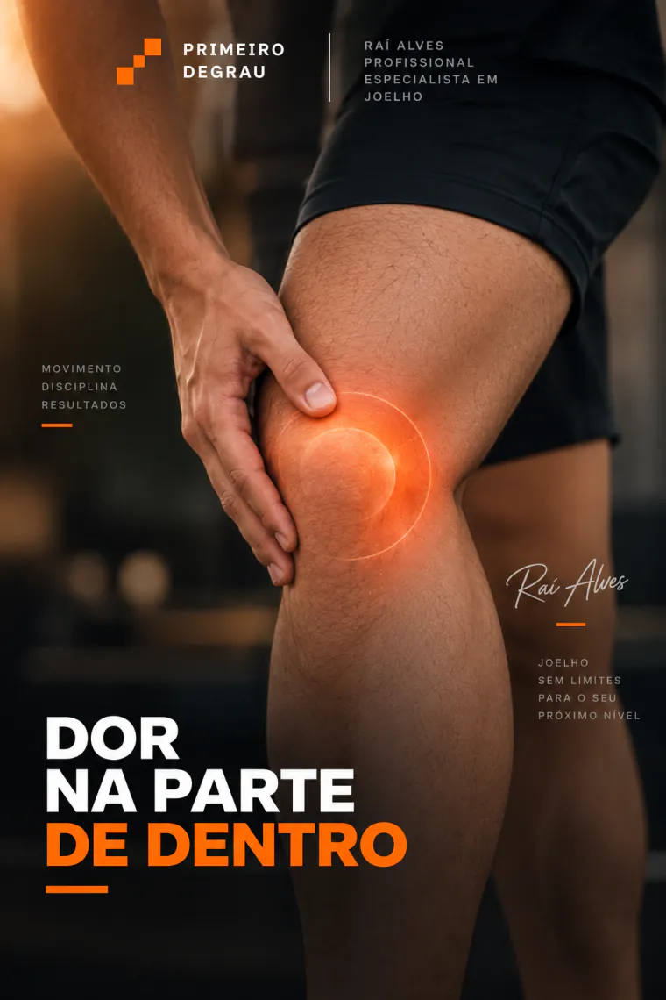
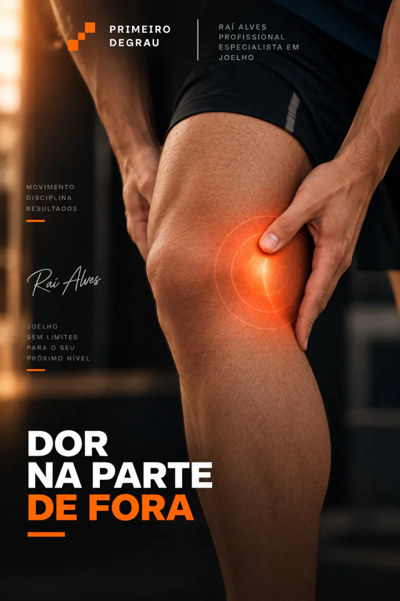
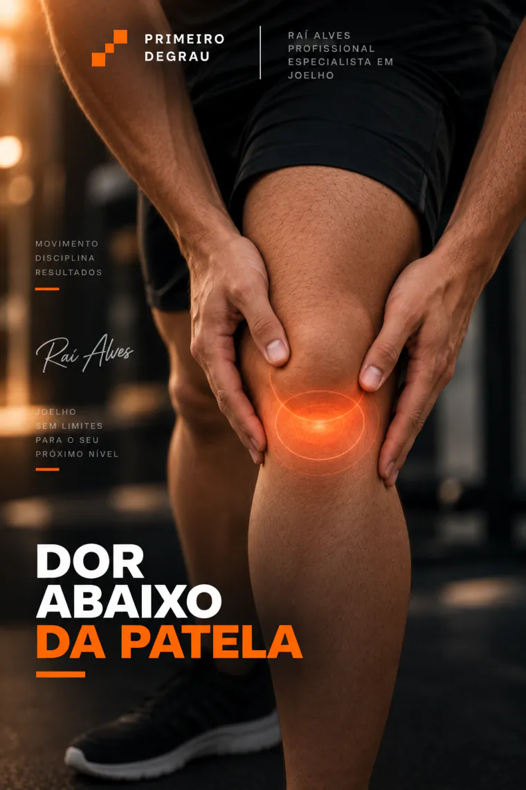
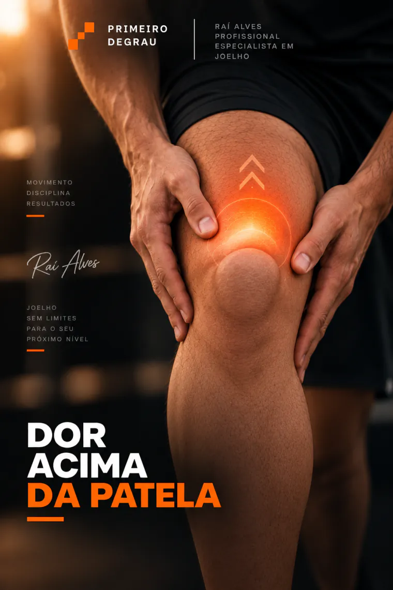
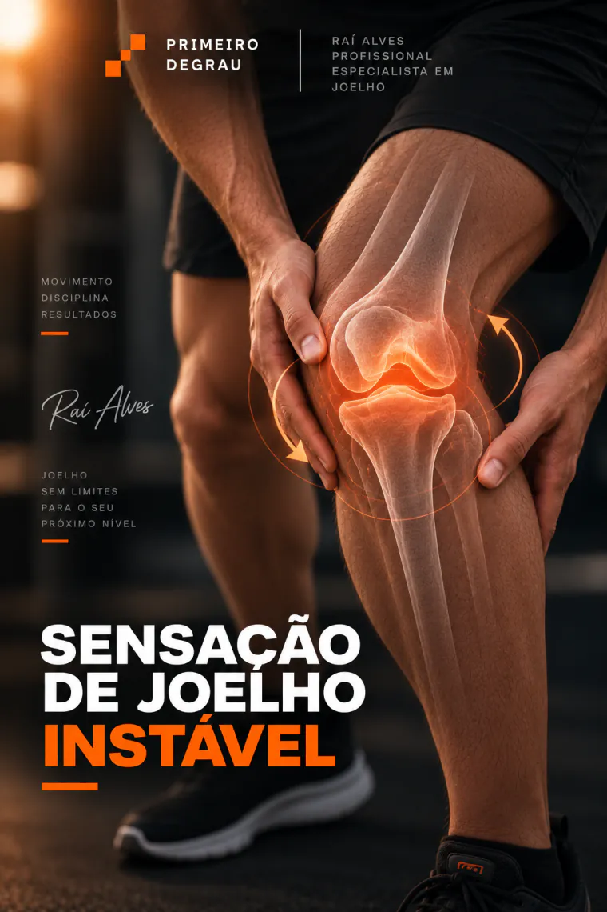
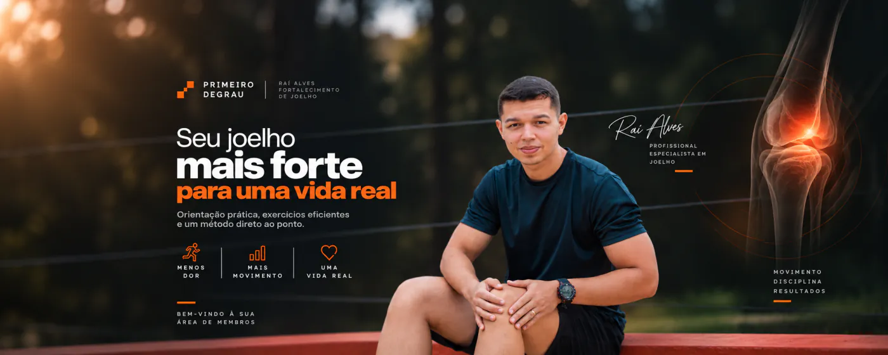
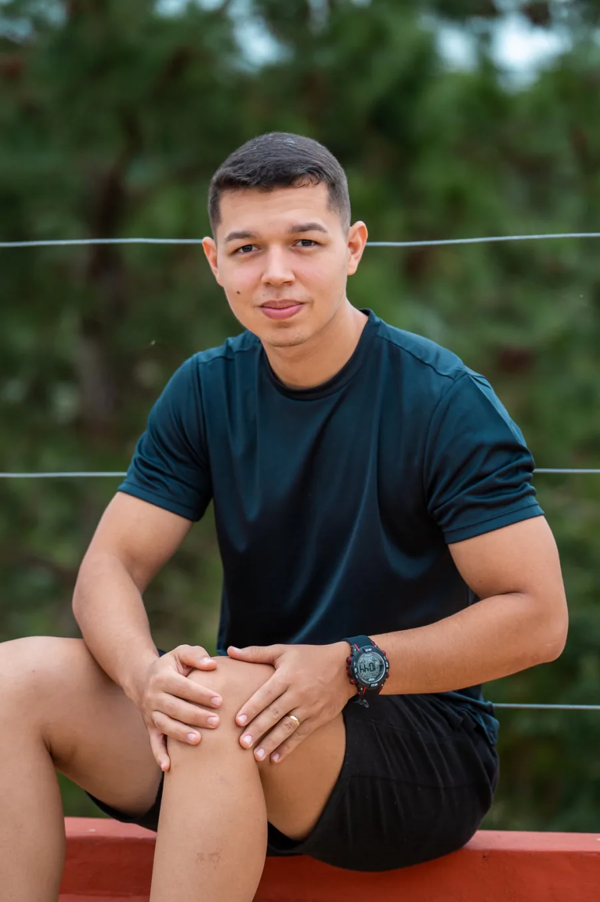
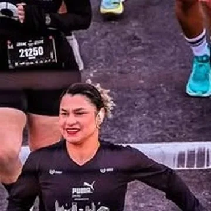
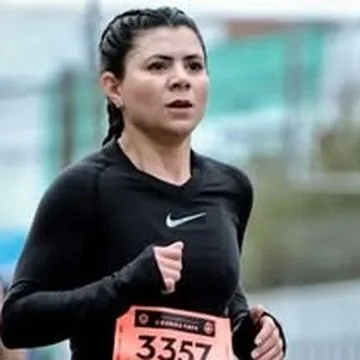

9 módulos · Casa e academia
Importa onde dói. Você aponta o lugar, abre o módulo daquele lugar e encontra o que fazer em casa com um elástico e o que fazer na academia.
QUERO O MATERIAL COMPLETO POR R$ 97Acesso imediato·Pagamento único·7 dias de garantia
O que você recebe
Ninguém chega dizendo "tenho condropatia patelar grau II". Chega dizendo "dói na frente, quando desço escada". Foi assim que eu organizei o material inteiro: por região, não por diagnóstico.
Em casa, com elástico Na academia
Arraste para o lado






Agachamento, leg press e extensora. A tabela do que manter, do que ajustar, do que suspender por enquanto e por qual exercício trocar.
Como treinar joelho enquanto o peso ainda está caindo, inclusive em quem está usando as canetinhas.
Data no calendário e joelho doendo. Essa rota trabalha contra o relógio, sem atropelar as fases.
Se você já tem um laudo
Você recebe os nove módulos, então nada fica de fora. Mas se você já saiu de um consultório com um nome na mão, essa tabela te diz por onde começar.
Reconhecimento
Se você marcou três ou mais, guarda essa frase: o problema não é o seu joelho. É o que estão mandando você fazer com ele.
O ciclo que não termina
Cinco coisas que eu repito todo dia para quem chega aqui.
A dor some enquanto você está parado e volta no primeiro dia em que você se mexe. Você não melhorou, você adiou.
O exercício certo tira a dor. O errado agrava a lesão. E os dois se parecem muito para quem olha de fora.
Quando o quadríceps trabalha muito mais que o posterior e o glúteo, a articulação absorve a diferença.
É o erro mais comum que eu vejo. Fortalecimento sem direcionamento empurra a dor para cima.
Essa é a frase inteira. A maioria só ouve a primeira metade, e é por isso que continua doendo.
O mecanismo
Existe uma faixa de carga, de amplitude e de ângulo onde o músculo fortalece e a articulação não sofre atrito. Dentro dela você trata. Fora dela, você está pagando para piorar.
Os nove módulos foram construídos dentro dessa faixa, do exercício de casa ao da academia. É por isso que funciona mesmo em quem sente dor hoje.
A base do método
A ordem importa mais que os exercícios. Pular fase é exatamente o que fez você chegar até aqui.
Isometria e carga baixa para tirar a articulação do estado de irritação sem parar de se mexer. É aqui que a maioria sente a primeira diferença ao descer escada.
Glúteo, posterior de coxa e estabilizadores do quadril. São eles que tiram a sobrecarga do joelho. Quase ninguém começa por aqui, e é por isso que quase ninguém resolve.
Agachar, descer degrau, caminhar e levantar da cadeira sem pensar no joelho. Os movimentos da sua vida, de volta, um por um.
Como você acessa
Você compra e recebe o acesso na hora. Abre pelo celular na academia, pelo computador em casa ou pelo tablet na sala de espera. Não tem aplicativo para instalar.

Quem vai te guiar

Todo dia eu recebo mensagem de gente que fortaleceu do jeito errado, que repousou por meses e voltou a doer no primeiro treino, ou que saiu de um consultório com a palavra cirurgia na cabeça e nenhuma alternativa na mão. Mais de 600 pessoas passaram por aqui e voltaram a treinar e a correr sem dor.
O Primeiro Degrau é o que eu faço nas primeiras semanas com quase todo aluno que chega até mim. Eu organizei isso em nove módulos para que você possa começar hoje, sozinho, em casa, antes mesmo de falar comigo.
"Tenho a convicção que aquilo que faço é prudente, honesto e que transforma a realidade daqueles que decidiram confiar nesse trabalho." Raí Alves · publicado no perfil em 01/09/2026
Casos reais
Todos publicados no perfil dele.

Não corria 5 km sem dor. Correu a meia maratona que tinha marcado.

Condropatia grau IV e proibida de correr. Correu as duas provas que tinha marcado.
Um médico indicou cirurgia. Começou a fortalecer em março. Hoje não sente nada.
Chegou com dor em junho, com o teste marcado para julho. Foi aprovada.
"Obrigada ao meu personal, que acreditou em mim. Após um ano, mais um pódio sem dor."
Começou em dezembro. Seguimos juntos até hoje, num projeto que praticamente zerou as dores dele.
Todos os casos e imagens acima foram publicados por Raí Alves em @raialves.treinador e podem ser conferidos no perfil. Resultados variam de pessoa para pessoa e dependem do quadro individual, da adesão ao protocolo e do acompanhamento profissional adequado.
A oferta
Os próximos vão ter ordem, ângulo e progressão. É a diferença entre se exercitar e se tratar.
PAGAMENTO ÚNICO · ACESSO IMEDIATO · SEM MENSALIDADE
Compra segura·Acesso na hora
Entre, faça a primeira fase inteira. Se não fizer sentido para o seu caso, você pede o reembolso dentro de 7 dias e recebe 100% de volta. Sem pergunta e sem burocracia.
Onde isso te leva
Eu prefiro ser honesto com você desde agora sobre o que o R$ 97 é e o que ele não é.
Resolve o que é comum a quase todo mundo. Os nove módulos, os exercícios de casa e de academia e o plano base. Você faz sozinho, no seu ritmo, sem depender de agenda. É o gostinho real do que eu faço com aluno.
É onde entra o que um protocolo não alcança: avaliação online do seu caso, ajuste semanal em cima do seu retorno, correção de execução e contato direto comigo. Se ao fim do material o seu caso pedir isso, você vai terminar sabendo exatamente por quê. Aí a gente conversa.
Nenhum aluno meu começou pelo acompanhamento sem antes entender o próprio joelho. O Primeiro Degrau existe para isso.
Antes de decidir
Serve, e o material foi montado exatamente para isso. Você não precisa de laudo nem de nome técnico. Você precisa saber onde dói: na frente, dentro, fora, atrás, acima ou abaixo da patela. Aponta o lugar e entra pelo módulo dele. Se você já tem um laudo, tem uma tabela nesta página que traduz o nome para o número do módulo.
Serve, e o objetivo muda. Não dá para reverter um desgaste que já existe. Dá para fortalecer a musculatura que sustenta a articulação, reduzir a sobrecarga e recuperar função e qualidade de vida. Isso acontece em qualquer grau. O que muda é a velocidade e o quanto do movimento você recupera.
O autodiagnóstico das 5 causas resolve isso logo na entrada. Ele te diz por qual região começar e em que ordem encaixar as outras. Você recebe os nove módulos, então nada fica de fora.
Não. Todo módulo tem a rota de casa, feita com um elástico. Se você já treina em academia, melhor ainda, porque tem a rota de academia e uma tabela de trocas dizendo o que manter, o que trocar e por qual exercício.
De 12 a 15 minutos. Foi construído nesse tamanho de propósito. Protocolo que exige uma hora por dia é abandonado na primeira semana, e protocolo abandonado não trata ninguém.
Não, e eu preciso ser direto nisso. Eu sou treinador. O meu trabalho é o fortalecimento, e o fortalecimento é parte do tratamento, não o tratamento inteiro. Se você tem dor aguda, inchaço, travamento, febre ou trauma recente, procure um médico antes. O Primeiro Degrau caminha junto com o seu acompanhamento de saúde, nunca no lugar dele.
Não neste produto, e é importante que isso fique claro. O Primeiro Degrau é o método guiado, não o acompanhamento individual. Ele resolve o que é comum a quase todo mundo. Se o seu caso pedir ajuste individual, você vai terminar sabendo exatamente por quê, e aí a gente conversa.
Você tem 7 dias para pedir o reembolso integral, sem precisar justificar. Eu prefiro devolver o seu dinheiro a ter alguém frustrado carregando o meu nome.
Última coisa
Ele melhora quando alguém te diz qual exercício fazer, em que ordem, até que ângulo e por quanto tempo. É isso, e só isso, que está dentro dos nove módulos.
QUERO O MATERIAL COMPLETO POR R$ 97Acesso imediato·7 dias de garantia
Raí Alves · Fortalecimento de Joelho
@raialves.treinador
Todos os direitos reservados